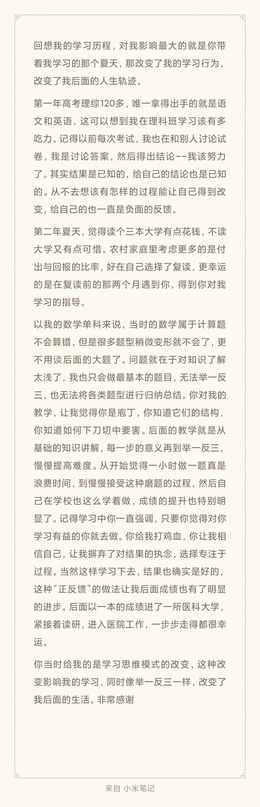

个人简介

我是Bruce，我是一个AI算法工程师，也是一名关注个人成长的占星咨询师。
我是一个人本主义占星咨询师，致力于人的成长，尤其是青少年的心理成长。在中学时期，我曾经历长期的家庭暴力，学习成绩一落千丈，处于非常迷茫无助的状态。然而，最终我幸运地摸索到了一套适合自己的学习方法，最终在高考中成功考入了一所985大学。
我的内在探索从中学时期就开始萌芽。在迷茫无助的时候，我幸好找到了一些内在的力量，这让我完成了从班级倒数到985大学的逆袭。我深信人的成长是伴随一生的追求，尽管这个过程充满了痛苦和曲折，但我始终没有放弃。每当我想要放弃的时候，总能找到继续坚持的理由。庆幸的是，我遇到了占星学，通过星盘找到了个人灵魂进化的方向。
我师从沐心方心理占星，这是一派专注于个人生命成长的占星门派。在这里，我接受了专业的占星和咨询训练，目前咨询小时数已超过60小时。占星学不仅帮助我理清了自己的内心世界，还让我在帮助他人的过程中找到了更大的价值和意义。
不仅如此，我还用我的经验帮助了许多青少年。其中一个印象深刻的案例是我曾带领一位高考三本的学弟，在一年的时间内逆袭到高考一本。通过针对性的学习方法和心理支持，他不仅在学业上取得了巨大进步，还在心态上变得更加坚强和自信。这段经历让我深刻体会到，每个孩子都有无限的潜力，只要找到适合他们的方法和给予他们足够的支持，他们就能克服任何困难。
学弟的感谢信
咨询风格
在我的咨询过程中，我秉持着温暖而务实的风格，用生命为生命服务。我相信每个人的成长都是独特的，每个灵魂都有它自己的节奏和方向。在与来访者的互动中，我注重倾听和理解，通过共情和实际的建议，帮助他们找到内在的力量和解决问题的方法。我坚信温暖的陪伴和务实的指导可以帮助来访者在面对生活中的挑战时找到内心的平静与力量，走向更好的自己。
占星学是我咨询过程中的核心工具，通过星盘，我能够深入了解来访者的内在需求、潜力和挑战。星盘不仅揭示了每个人独特的个性和生命轨迹，还能为他们提供清晰的方向和指导。在每一次咨询中，我都会结合占星学的智慧，提供个性化的建议，帮助来访者更好地理解自己，克服困难，实现成长。
在与中学生的咨询中，我尤其关注他们的心理健康和学业表现。青少年时期是充满变化和挑战的阶段，我通过占星学和心理咨询，帮助他们找到内在的力量，增强自信心和抗压能力。我相信，通过温暖的陪伴和务实的指导，能够帮助青少年在学业和生活中取得更大的进步。
愿景
在长程的咨询陪伴中，我希望能成为你坚强的后盾，帮助你在迷茫和困境中找到前行的方向。星盘在这个过程中将扮演重要的角色，它们能够揭示你内心深处的力量与潜能，指引你走向更好的自己。我相信，每个人都有内在的力量，只需发掘和引导，便能战胜生活中的各种挑战。特别对于中学生们，我希望你们在这个过程中突破自我，不仅提升成绩，还能获得心灵的成长和智慧的积累。咨询结束后，希望你能带着这份力量和勇气，继续前行，迎接未来的每一个挑战。正如爱因斯坦所说：“在困境中，保持冷静。”愿你在面对生活的风浪时，能够始终保持内心的平静和坚韧，成就更加坚强的自己，书写属于你们的辉煌篇章。